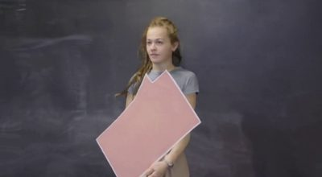
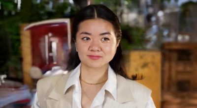

simple01_woman_talking_plants
ReCam真实末帧

完整源动作参考
打开完整尺寸文件 · 81 帧 · 全帧PTS保留 · 19 KB预览
Stage3应在首图的新视角下重现动作，禁止额外转向源视频机位。源片人物不转头时，新生成主体继续保持首图对应的朝向。源片确有转头时，只迁移相对其初始姿态的转动。45°是说明例子，Stage2目标仍约30°。
本批仅3条新Depth调用；相对下面旧prompt基线，只改prompt。真实ReCam首图、完整81帧动作、固定深度/遮罩、seed42、50步、分辨率、原生首帧约束全部相同。该控制用于验证措辞能否改善结果，不预先称修好，也没有实施数值头姿重定向。
新调用：已出片 0/3；运行中 3；排队 0；失败 0。2026-10-22T15:01:25+08:00
返回7模型重测 · 状态及位置 · prompt与相机条件核查 · 旧新prompt及不变条件 · 逐条单变量与解码核验 · 视频路径索引
A continuous live-action shot. The person moves naturally. Preserve the identity and clothing of the person in the supplied initial image. The camera stays completely locked at the viewpoint and framing of the supplied initial image for the entire shot. Keep background objects, scene geometry and lighting stationary. No camera orbit, pan, tilt, dolly, zoom, shake, scene change or cuts. Use the separately supplied complete source video as the action reference. Reproduce its chronological facial expressions, mouth, head, body and hand actions while retaining the initial image viewpoint, appearance and stationary background. Do not copy camera movement or the original viewpoint from the action reference.
simple01_woman_talking_plants
原生输出f0（未替换）
simple02_woman_presenting_chalkboard
原生输出f0（未替换）

simple03_woman_slow_expression
原生输出f0（未替换）

A single continuous live-action shot rendered entirely from the fixed camera viewpoint established by the supplied initial image. Use that image as the required first frame and retain its scene geometry, composition, identity, clothing, background and lighting. Transfer the performance from the complete action-reference video into this new view. Interpret reference motion as changes relative to the person and objects in the FIRST FRAME OF THE REFERENCE VIDEO, not as absolute image-space poses or camera-facing directions. Starting from the head, body and gaze directions established in the supplied initial image, reproduce the reference sequence of facial expressions, mouth motion, gestures and relative head and body motion in the same order and timing, as seen by the fixed new camera. If the reference person continues looking forward without turning, preserve the initial-image head and body direction in the scene; do not turn the person toward the camera to match the reference screen-facing appearance. If the reference contains an actual turn, reproduce only that relative turn starting from the initial-image orientation. Never morph or interpolate the initial pose into the reference-video first pose. Keep the camera and background stationary throughout while allowing the person to perform the reference actions. Do not freeze the person, add a look-at-camera turn, restore the reference camera view, orbit, zoom, change scene or cut.